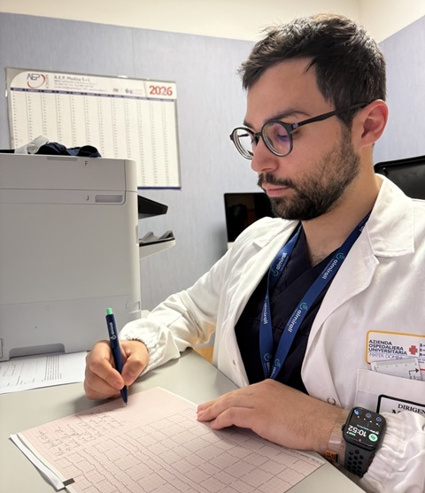
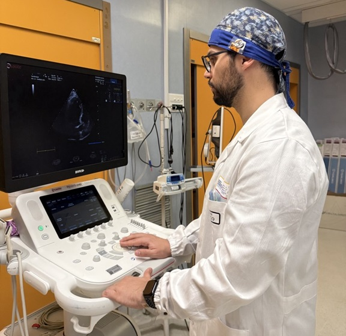

Terapia aggiornata
Farmaci, dosi e frequenza, compresi quelli non cardiologici.
Prestazioni e approfondimenti
Qui trovi ciò che serve sapere: perché un esame può essere indicato, cosa succede durante la valutazione e quale decisione può aiutare a prendere.
Valutazione clinica
La visita mette insieme sintomi, storia clinica, fattori di rischio, esame obiettivo, terapie ed elettrocardiogramma.
Il problema viene inquadrato ricostruendo la storia clinica; seguono l’esame obiettivo e l’interpretazione dell’ECG nel contesto della persona e della sua storia.
L’obiettivo non è accumulare esami, ma arrivare a un orientamento: capire cosa emerge dalla valutazione, cosa richiede ulteriori approfondimenti, se la terapia va proseguita o modificata e come controllare il quadro nel tempo.
Un ECG normale non esclude da solo tutte le patologie cardiache. Un tracciato alterato, allo stesso modo, non va interpretato senza il contesto clinico.

Diagnostica non invasiva
L’ecocardiogramma usa ultrasuoni per osservare il cuore in movimento. Valuta dimensioni, funzione di pompa, valvole, pericardio e principali flussi intracardiaci. Non espone a raggi X.
L’esame viene eseguito appoggiando una sonda sul torace. È non invasivo e, nella forma transtoracica standard, non richiede preparazioni particolari. Può risultare più o meno fastidioso a seconda dei movimenti richiesti e della pressione che talvolta è necessario esercitare con la sonda per ottenere immagini di buona qualità. La sensazione varia da persona a persona: in genere non è doloroso, ma un po’ di pazienza e collaborazione aiutano a eseguire l’esame nel modo migliore.
Se esiste un’alterazione strutturale o funzionale e se questa richiede terapia, ulteriori esami o controlli programmati.
Non va ripetuto automaticamente a ogni controllo. La frequenza dipende dal problema clinico e da ciò che il risultato può modificare nel percorso di cura avviato.

Cardiologia interventistica
La coronarografia visualizza direttamente le arterie coronarie mediante cateteri e mezzo di contrasto. È una procedura invasiva che si effettua in regime di ricovero.
È fondamentale nell’infarto e, più in generale, nelle sindromi coronariche acute. Nei ricoveri programmati viene invece eseguita dopo un percorso diagnostico preliminare, quando conoscere con precisione l’anatomia coronarica può modificare in modo significativo la strategia di cura.
La procedura si svolge in sala di emodinamica, in anestesia locale, di solito attraverso un’arteria del polso. I cateteri vengono avanzati fino all’origine delle coronarie, dove viene iniettato selettivamente il mezzo di contrasto. Se viene identificato un restringimento coronarico che richiede trattamento, nei casi appropriati l’angioplastica può essere eseguita nella stessa seduta.
Se una stenosi richiede terapia medica, ulteriori valutazioni oppure un trattamento interventistico. Quando il significato della stenosi non è chiaro, fisiologia coronarica e imaging intracoronarico possono aiutare a decidere se e come trattare.
Un restringimento coronarico (cioè una stenosi) non è, di per sé, un’indicazione al trattamento. La decisione nasce dall’insieme di anatomia, sintomi, ischemia e rischio clinico. Si interviene quando il beneficio atteso supera concretamente il rischio procedurale.

Prima della visita
Meno documenti. Più informazioni utili.
Farmaci, dosi e frequenza, compresi quelli non cardiologici.
Lettere di dimissione, visite specialistiche, ECG, ecocardiogrammi, Holter e altri esami strumentali precedenti, cardiologici e non.
I vecchi referti non servono a sostituire la valutazione attuale, ma a darle una storia. Ogni visita è un fotogramma: solo mettendo in sequenza quelli del passato con ciò che osserviamo oggi possiamo comprendere come il quadro clinico si è evoluto nel tempo.
Porta quelli già disponibili. Non è necessario eseguirne di nuovi senza indicazione.
Allergie, reazioni a farmaci o al mezzo di contrasto, procedure precedenti e variazioni recenti dei sintomi. Prima della visita può essere utile fermarsi un momento a mettere a fuoco i fastidi che hanno portato a prenotarla e i dubbi che si desidera chiarire.
Non modificare o sospendere una terapia in preparazione alla visita se non su indicazione del medico che l’ha prescritta o del centro che eseguirà l’esame.
Domande comuni
Le indicazioni pratiche e di preparazione riportate qui si riferiscono alle visite cardiologiche prenotate con il Dott. Andrea Carbone in regime intramoenia. In altri contesti o con altri specialisti possono essere richieste modalità diverse: in presenza di indicazioni specifiche, fanno fede quelle comunicate al momento della prenotazione o dal medico di riferimento.
Non è necessaria una preparazione particolare. Porta con te la documentazione clinica più importante, gli esami precedenti e l’elenco dei farmaci che assumi. Avere informazioni complete aiuta a ricostruire meglio la storia clinica e a evitare accertamenti non necessari.
Sì, quando disponibili. Ogni visita descrive il quadro in un determinato momento; confrontarla con esami e valutazioni precedenti permette di capire cosa è rimasto stabile e cosa è cambiato nel tempo.
Di norma no. Continua la terapia abituale e non sospendere o modificare autonomamente i farmaci. Se un esame richiede indicazioni particolari, verranno fornite in anticipo.
No. L’ECG a riposo e l’ecocardiogramma transtoracico non richiedono digiuno né particolari preparazioni. Eventuali indicazioni diverse vengono comunicate prima dell’esame.
Sì. L’ECG a riposo fa parte della visita cardiologica e viene sempre eseguito. Il suo significato, però, non è mai isolato: viene interpretato alla luce dei sintomi, della storia clinica e del resto della valutazione.
No. L’ecocardiogramma è un esame molto utile, ma non deve essere eseguito automaticamente. Viene indicato quando può aggiungere informazioni rilevanti e contribuire alle decisioni successive.
Non necessariamente. Un reperto isolato non definisce da solo la presenza o la gravità di una malattia. Va interpretato insieme ai sintomi, alla storia clinica e agli altri esami. L'importante è comprenderne il significato e, quando necessario, stabilire come controllarlo nel tempo.
No. La coronarografia è una procedura invasiva che si effettua in regime di ricovero, indicata quando può fornire informazioni realmente utili per orientare il trattamento. Non è un esame di screening e la sua necessità viene valutata sulla base del quadro clinico.
No. La presenza di una stenosi non comporta automaticamente la necessità di intervenire. Sintomi, anatomia, presenza di ischemia e quadro clinico vengono valutati insieme. Quando si considera una procedura invasiva, benefici attesi e rischi devono essere sempre attentamente bilanciati.
Non esiste un percorso uguale per tutti. In alcuni casi è sufficiente proseguire i controlli; in altri può essere opportuno modificare la terapia o eseguire ulteriori accertamenti. L'obiettivo è definire un percorso proporzionato al problema e mantenerlo sotto controllo nel tempo.
Se compaiono sintomi nuovi, importanti o che peggiorano rapidamente, non aspettare la visita programmata né una risposta tramite sito, email o messaggi. È opportuno rivolgersi tempestivamente al Pronto Soccorso più vicino o ai servizi di emergenza sanitaria.
Per approfondire
Le risorse esterne servono a informare. Non sostituiscono la valutazione del singolo caso.
Contenuti informativi rivisti: agosto 2026.
Accesso
Prenotazioni tramite CUP. Contatti diretti per informazioni organizzative.